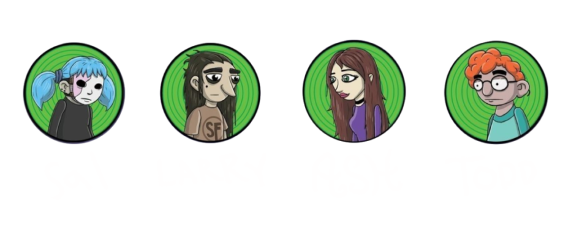

This game deals with triggering, graphic content such as violence, gore, death, suicide, and many more. Please be cautious if you want to check the game for yourself!

Sally Face is a dark, psychological horror point-and-click- advernture game that was created by Steve Gabry, or by his developer name Portable Moose. This game was all made with just a one-man army, so Steve contributed by creating the illustrations, writing, music, coding, and many more to make it all come to fruition.
Puzzle-solving, exploring, and interacting with the game's environment and characters is crucial to understand the game's narrative. The game consists of five episodes. The first episode was released on August 16, 2016 on itch.io, then on Steam at December 15, 2016.
